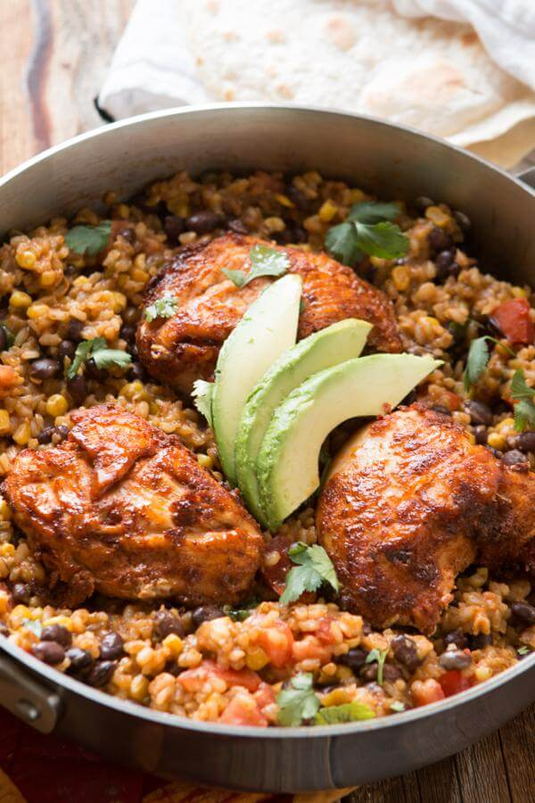
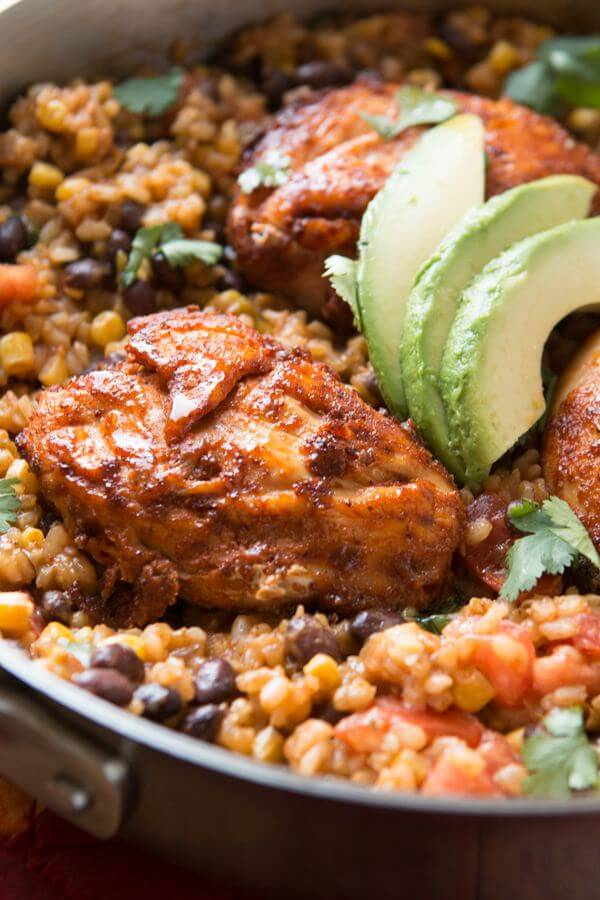
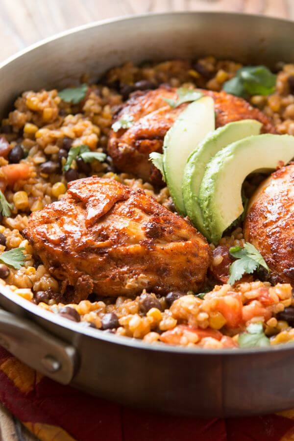

Fiesta Chicken With Rice
Prep Time:20 mins
Cook Time:1 hour 10 mins
Total Time: 1 hour 30 mins
Yield: 4-6 serving
Ingredients
Seasoning Blend
Chicken & Rice
Steps
- Mix together the spices called for in the seasoning blend.
- In a ziploc, add the chicken, cornstarch and 2 Tablespoons of the seasoning blend.
- Seal the bag and shake to coat the chicken.
- Heat a high sided skillet over high heat and add one tablespoon oil.
- Once the oil is shimmering, add the chicken and turn down to low heat.
- Cook about 6-7 minutes, flip over and continue cooking until cooked through, about 4-6 minutes.
- Remove the chicken to a plate and tent with foil.
- Place the skillet back on the burner and turn to medium heat.
- Add the remaining oil and the rice.
- Cook, stirring occasionally for 2 minutes.
- Add the broth, water, remaining seasoning blend, salt, lime juice and diced green chiles.
- Bring to a boil then turn to low, place the lid on the skillet and cook for 45 minutes for brown and 20-30 minutes for white rice.
- Remove the lid, add the beans, corn, cheese and tomatoes. Season to taste, and stir.
- Add the chicken on top and place the lid on to cook for another 10 minutes to bring everything to temperature.
- Serve with fresh avocado and cilantro.
Notes
- Storage: Store leftovers in the refrigerator for 3-4 days.
Gallery

